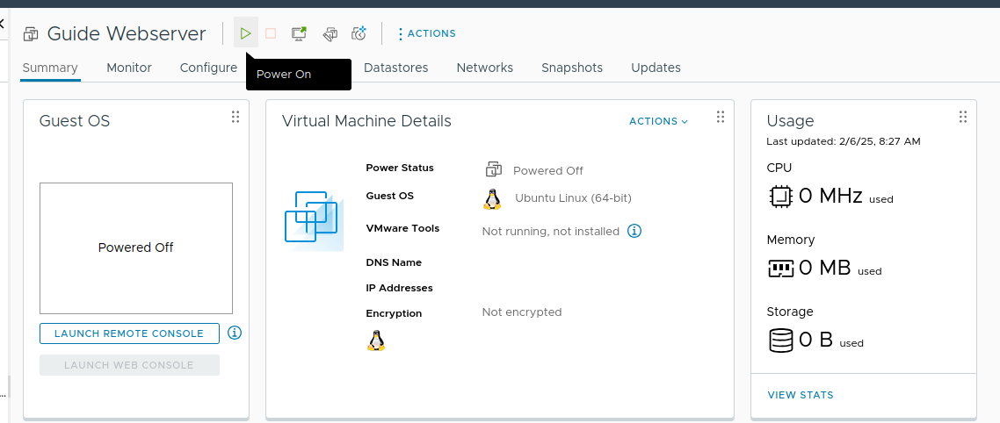
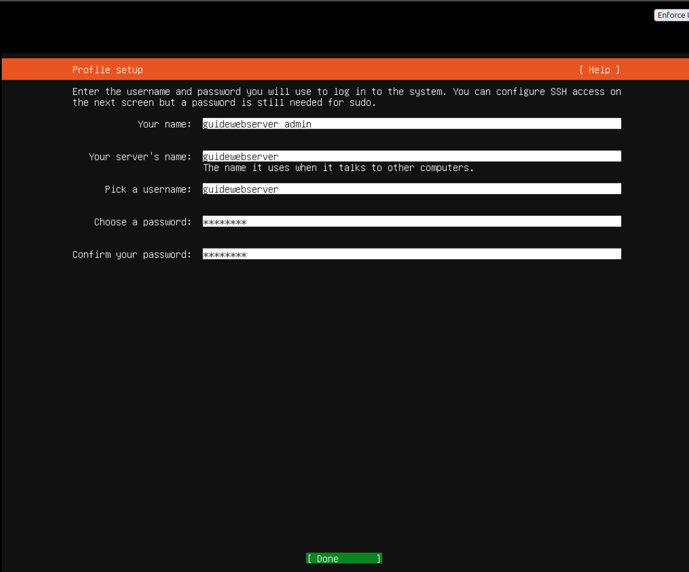

1. Sett opp VM
Lag din VM
Step 1: Create New VM
Høyreklikk på din egen pool for å åpne denne menyen
Step 2: Creation Type -> Default
Step 3: Velg VM navn
Pass på at navnet er unikt og at det er relatert til det VM'en skal bli brukt til!
Step 4: Velg Pool -> Default
Step 5: Velg hvor VM skal lages -> IKT-fag (den med masse plass)
Step 6: Set Compatibility Options -> Default
Step 7: Velg OS. Først velger du type, så mer spesifikt hviklen versjon.
Hardware Oppsett
Alle bildene under "hardware setup" er på samme side!
Sett hardware innstillinger
CPU: 2gb
RAM: 4gb
Hard disk: 20-30gb
Velg "content library iso file" for å få en liste over alle iso filene du kan bruke. (se bilde under)
Velg ISO -> Ubuntu live server
Siste checkup på denne siden
Pass på at "thin provision" er valgt under "new hard disk" -> "disk provisioning"
Pass på at CD/DVD drive har "connect at power on"
Gå til "VM Options" -> Boot Options -> Force EFI setup
Start VM
 Se over at alt du gjorde var riktig
Se over at alt du gjorde var riktig

Skru på VM
Launch Web Console
2. Sett opp Ubuntu Server
Hvert bilde er på "neste side" med mindre det står at de er relatert til hverandre!
Boot og Språk
Boot normally (velg første alternativ)
Velg "Try or Install Ubuntu Server"
Velg English som språk
Velg Norwegian som tastatur layout
Velg Ubuntu Server (ikke minimized)
Network Oppsett
Sett opp manuell IPv4
Du må sette opp IPv4 manuelt for å få tilgang til internettet senere
Subnet: 10.12.elevPool.0/24
Address: 10.12.elevPool.valgtAdresse
Gateway: 10.12.elevPool.1
Name servers: 0.0.0.0, 8.8.8.8, 10.10.1.30
-- 0.0.0.0 (default invalid)
-- 8.8.8.8 (google)
-- 10.10.1.30 (default skole DNS)
Search Domains: valgtSubDoman.elevPoolNavn.ikt-fag.no
Trykk Done når du er ferdig med network setup
La proxy address stå tom
Bruk default archive mirror
Storage og System
Fortsett uten å oppdatere til ny versjon
 Bruk default storage config
Bruk default storage config
Se over at alt er riktig satt opp
Bekreft at du vil fortsette
Profil og SSH

Sett opp profil informasjon
Husk å lagre denne informasjonen, du trenger den for å logge inn senere!
Installer OpenSSH server
Dette er viktig for å kunne koble til serveren senere
Ikke velg noen featured server snaps
Installasjonen er ferdig
Trykk Enter for å starte systemet på nytt